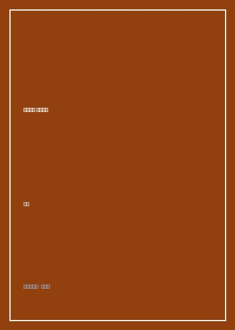

《天才在左 疯子在右》

总体观点
《天才在左 疯子在右》（原名《精神病人的世界》）是中国当代畅销书史上最具破圈影响力与心智冲击力的访谈实录之一。作者高铭耗费整整四年时间，穿梭于各大精神病专科医院与戒备森严的重症病区，通过上百次面对面的长谈，打破了外界对精神分裂症与偏执狂患者“胡言乱语、疯癫痴傻”的刻板定型，首次将这群被隔离在正常文明边缘的特殊人类的大脑内部景观，以极具逻辑震撼力的方式呈现于世人面前。
全书的核心魅力在于其颠覆性的认知视角——“天才与疯子往往只隔着一堵由平庸常识筑起的脆弱矮墙”。作者发现，许多被诊断为精神异常的求助者，不仅思维没有逻辑断裂，反而拥有令人战栗的自洽哲学体系与跨学科统摄力。从将人类在时间轴上的存在描绘为一条条蠕动多脚软体动物的“四维虫子”假说，到从蚂蚁蚁后信息素网络解构人类文明脆弱性的“伪装的文明”；从将量子纠缠与濒死意识融合的“永远，永远”，到拷问人类感官主观构造的“红色的苹果到底是不是红色”，这些对谈宛如一剂剂给思维僵化的大脑注射的清醒剂。
作者以克制而充满敬畏的笔触，不仅带领读者推开了一扇扇通往平行认知宇宙的窗户，更深刻反思了人类所谓的“正常”究竟由谁定义。当大多数人受困于进化赋予的有限感官与社会化规训的平庸牢笼时，那些看似离经叛道的疯癫妄想，或许正是人类心智探寻宇宙终极奥秘与多维空间时，不小心被强光灼伤双眼后留下的悲壮烙印。
核心观点
-
1. 四维虫子假说：脱离线性时间束缚的高维生命全景图
在四维时空生物眼中，三维人类绝非孤立独立的个体，而是一条从受精卵延展至坟墓骨灰的、不断蠕动膨胀并最终消亡的巨型发光蠕虫。
受访少年平静地在纸上画图解释：“你看一个人，其实只看到了他当下的一个三维截面；如果跳出时间轴看，你从出生到老死的所有形态，在四维空间中是同时存在的。” -
2. 感官的囚笼陷阱：我们眼中的客观世界不过是大脑的电信号解码
人类以为眼睛看到的红苹果就是客观真实，然而颜色不过是视网膜视锥细胞对特定电磁波长的主观神经转译。所谓“常识”只是多数人的生理共识。
患者递给作者一个红富士苹果提问：“你怎么知道你看到的红色和我看到的红色是一样的？说不定我眼里的绿色在你的大脑里才是红色，我们只是用了同一个词汇而已。” -
3. 伪装的文明与蚁群意识：超级个体对人类原子化社会的降维嘲讽
单个蚂蚁没有智能，但上百万只蚂蚁构成的蚁群却能修建精密温控的地下通风宫殿。人类以为自己是万物灵长，殊不知在超个体面前或许只是低级自大狂。
一位整日蹲在花坛边观察蚂蚁的年轻生物学者坚信，真正的智慧生命是群体信息素网络，人类过度膨胀的个体自私意志反而是文明向野蛮退化的死穴。 -
4. 影子宇宙的映射假说：三维世界只是高维真实在墙上的微弱投影
如同柏拉图洞穴寓言，如果一个二维纸片人无法理解穿过纸面的三维苹果，三维人类也必然无法理解突然出现又消失的高维物理现象，将其斥为幻觉。
一位患有幻视的物理系大学生在黑板上推导拓扑流形公式，论证自己眼中的幽灵不过是四维几何体在三维空间中旋转时掠过的阴影截面。 -
5. 审判疯狂的权力边界：警惕平庸大众以正常之名抹杀探索火种
多数人的平庸共识往往演变为对异端探索者的暴力迫害。保持智识的谦逊，倾听那些看似疯癫的逻辑闭环，是避免文明走向思维固化僵死的唯一抗体。
作者在全书结语中发出深沉警示：“当你凝视深渊时，深渊也在凝视你。请记住，很多时候不是疯子疯了，而是我们的大脑太懒惰，不敢相信世界可以有另一种活法。”
全书思维导图 · 知识脉络树
全书结构
-
第一辑 维度的跨越（《角色问题》《四维虫子》《时间的尽头》）
从经典的高维时空假说切入，记录坚信自己是宇宙小说作者的狂想者，以及从量子时间轴俯瞰人类一生的四维时空观察者对谈。
十七岁高中生在病房里用极其熟练的拓扑代数，给作者讲解如果时间是一个坐标轴，因果律将如何变成一个可以任意往返的圆形回路。 -
第二辑 生物与文明的反思（《进化惯性》《伪装的文明》《飞禽走兽》）
从比较解剖学、动物集体潜意识与植物神经反应切入，颠覆人类中心主义，拷问现代工业科技文明在自然界的真实坐标。
记录一位坚信植物拥有痛觉神经与超声波语言的患者，如何痛哭流涕地拒绝修剪指甲和踩踏草坪，因为他能“听见草叶被踩断时发出的高频尖叫”。 -
第三辑 意识与物质的边界（《永远，永远》《灵魂的尾巴》《苹果的味道》）
聚焦认识论与认知神经科学前沿，探讨色彩感知的主观构造、意识量子态在死亡瞬间的能量转移，以及梦境作为平行宇宙的推演。
一位曾任麻醉科医生的患者详述在手术台濒死体验中见到的意识量子场，论证肉身的呼吸停止只是意识波函数在现实维度的退相干。 -
第四辑 孤独的守望者（《棋手》《盗梦者》《最后的朝圣》）
收录最令人唏嘘深思的边缘天才故事，展现那些为了守护自身纯粹精神逻辑、甘愿放弃正常世俗生活被终身禁锢在病房里的赤诚灵魂。
一位在病房墙壁上用指甲刻满上千道算式的数学狂人，在作者临别前微笑着叮嘱：“千万别让他们给我注射镇静剂，那会弄脏我的黑板。”